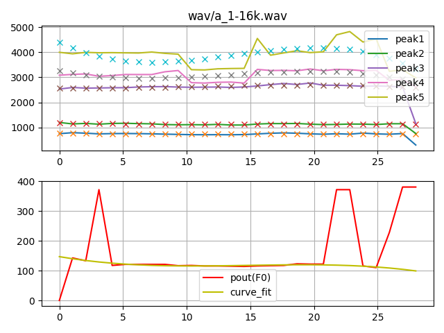
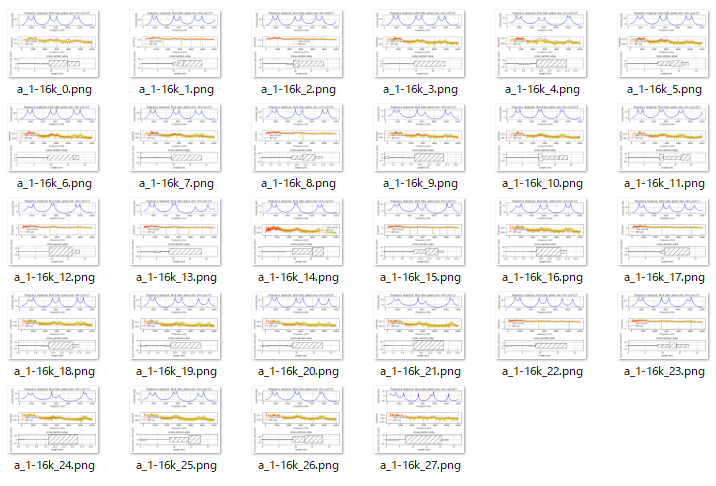
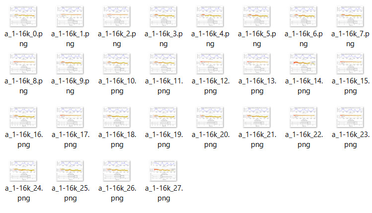
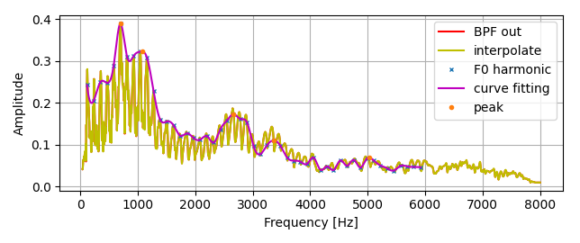

Estimation four tube model length and area about japanese vowels.
pks2tube5frame is main program.
It loads a vowel wav file(16Khz mono), LPC analysis, get peaks candidates and pitch(F0) candidate,
exclude outliers using a cubic expression and interpolate about peaks and pitch(F0), and
estimate four tube model length and area by grid search and scipy's optimize.fmin, downhill simplex algorithm.
option:
python pks2tube5frame.py -w wav/a_1-16k.wav -r result_figure_a -B
Human vocal tract moves smoothly and continuously.
However, LPC analysis peaks candidates and pitch(F0) candidate is sometimes discontinuously.
They are translated to continuous values using a cubic expression and interpolate.

Following estimation result, tube length and area, are inconsistent. Their movement are not smoothly and continuously.

These figures are in the result_figure_a folder.
And then, manually select a reasonable frame for human vowel vocal tract as start frame,
use previous frame LA0 (estimated length and area) as initial value of scipy's optimize.fmin, and repeats its operation.
python pks2tube5frame.py -w wav/a_1-16k.wav -r result_figure_a -f 14 -B

These movement is almost smoothly and continuously.
These figures are in the result_figure_a/14 folder.
Voice BPF output has harmonic structure and it shows only digitized samples of vocal frequency response.
It's necessary to estimate vocal overall frequency response to know true peaks (formants) by any method.
Following is vocal frequency response estimation by curve fitting via F0 harmonic frequencies (fundamental and overtones).
python BPF_analysis2.py -w wav/a_1-16k.wav

MIT